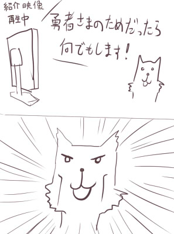

シルバーセカンド開発日誌
■
2015-07-04 (土) フリカツ10 クラス▼【振リ返リマセン勝ツマデハのお話 その10】
「不思議のクロニクル 振リ返リマセン勝ツマデハ」、
いよいよ発売まで4週間を切りましたが、
皆さまいかがお過ごしでしょうか。
どんな感じになるのか答えが分かる日が近付いているということで、
そろそろドキドキしてきましたよ。
それはそうと、公式の略称はどうやら「フリカツ」になったようです。
カタカナなので打ちやすい、はず！
（前回挙げた紹介映像に映ってたツイッター連動機能画面に出てました）
【山盛り新クラス】
フリカツでは大量の新クラスが用意されることがウリになってます。
振リ返リマセン勝ツマデハ 公式ページ
http://www.spike-chunsoft.co.jp/furikatsu/(ｱｰｶｲﾌﾞ)
6月26日の更新で、公式ページの「クラス」欄に
大量の新クラスが紹介されてるので気になるかたはぜひ。
立ち絵が個性豊かで華やかですね。

さすがに対戦を考慮すると弱クラスを入れにくいのか、
あるいは他の何らかの理由で、「観光客」みたいな
縛りクラスは今のところいないようです。
敵感知ができる狩人は相変わらず強い予感がしてますが、
果たしてどうなるでしょうね。
と思いましたけど、敵召喚のワナには無力すぎますね。
それぞれ新たに苦手なものと得意なものが出そうで、
今から楽しみです。
また、目玉として挙げられることは少ない部分ですが、
面白いアイテムもたくさん増えてるかもしれません。
この辺のデータ数の多さやバランスはローグライクを
一番効率よく面白くできる部分だと考えているんですが、
あんまり注目されない部分なので、ここは実際に遊ぶしかなさそうです。
【荷運び馬参戦！！】
「システム」→「仲間と協力NPC」のところを見ると
荷運び馬がそのまま参戦してますね。
突進による高い荷物防衛力もそのままでしょうか。
仲間と協力NPCがシステム的に分かれているのは
そのまま継承されるようです。
仲間と協力NPCで2種あるのはややこしいため
全部「協力NPC」に統一されるかなと思っていたので、
初出のときにはちょっと意外だと感じた部分ですね。
あとどうでもいいですが、紹介映像をよく見ると
「太陽のアーリア」（プラス版で理力を教えてくれる人）も
出てたりしますので、この調子なら「占い師アウリス」も出てそうです。
【Steam版片道勇者プラスについて】
いろいろなタイミングが合わなくなった都合で、
Steam版片道勇者プラスのDLC公開は8月予定となってしまいました。
期待してくださっている皆さまには誠に申し訳ございません。
ひとまずデータなどはできあがっているんですが、今のSteamでは
プロモーションのタイミングなどを合わせないとまちがいなく爆死するので
それで時期の調整が入っている感じです。
フリカツより先に出せなかったのがちょっと残念かもしれませんね。
（たぶんフリカツの後にプラス版を買う人はあまりいないでしょう）
それと前回に引き続きのご連絡ですが、
来月、7/26（日）から第七回ウディコンも開催です！
参加される方はお忘れなく！ ■
2015-06-27 (土) フリカツ9 紹介動画▼【振リ返リマセン勝ツマデハのお話 その9】
「不思議のクロニクル 振リ返リマセン勝ツマデハ」ですが
つい先日、商品紹介動画が上がってました！
映像は以下の通りです。
感想↓

【映像を見て】
色々と具体的な映像が出てましたね！
大きな新情報としては、ダンガンロンパやシレンとのコラボがあることや
追加ダウンロードコンテンツの配信があることなどでしょうか。
公式動画では初のボイスが入ってたり、主題歌かイメージソングが
あるっぽいので気になる方は映像をご覧ください。
特別ルール世界も定期配信とのことですので、最近主流になってきた、
「発売後、徐々にアップデートしていく形」を取るような印象です。
【おまけ情報】
またこれとは別に、シレン5plusの
ゲーム実況チャンネル（ニコニコ生放送）で
プロデューサさんが出てフリカツについていろいろ紹介しておられました。
http://live.nicovideo.jp/watch/lv224582391（ニコニコ生放送/終了）
※ニコニコ生放送のタイムシフトが見られる人は1:43:00頃からどうぞ
7月に体験版が出るっぽい話や、
そこではタイケンバン（※世界名）の世界や
チュートリアルの世界で遊べるといったことをおっしゃってたので、
もしかしたら発売日よりちょっと前に遊べる可能性があるかもしれませんね。
番組としての実況プレイ放送は7/14から始まるようです。詳細は↓
http://ch.nicovideo.jp/ch424/blomaga/ar819080
（ブログ記事・ｱｰｶｲﾌﾞ）
フリカツは動画配信もＯＫらしいので、時間があったら
私もこの機会にプレイ動画を作ってみたいなーと思ってます。
「原案者が遊ぶ振リ返リマセン勝ツマデハ」とか自己主張マンマンで！
スキャンダラスな内容にならない程度には配慮します！！
皆さまの予想よりローグライクが得意じゃないことが判明すると思います。
ということで先走ってPS Vita TVを買ってきてしまいましたが
果たして遊ぶヒマがあるのか謎です。
色々事情があって、あと何ヶ月か超忙しい状態が続きそうです。
それと話は変わりますが、
来月、7/26（日）から第七回ウディコンも開催です！
参加される方はお忘れなく。
【ウディコン公式ページ】
http://silversecond.com/WolfRPGEditor/Contest/（新ウィンドウ）
最近は色々とゲームコンテスト的なイベントが増えてきたので、
ウディコンに限らず、自分にとって一番価値があるものを
選んで出してくださいね。 ■
2015-06-20 (土) フリカツ8 新情報▼【振リ返リマセン勝ツマデハのお話 その8】
今回の振リ勝ツチェック対象はファミ通.comの新情報記事からです！
<ファミ通 新情報記事>
http://www.famitsu.com/news/201506/04079868.html （ｱｰｶｲﾌﾞ）
ワナや仲間の紹介、そして
11種類ものクラス紹介などが掲載されています。
協力NPCや通常NPC、敵やアイテムに関しては
だいたい原作と同じようです。

＜ワナ＞
スクリーンショットには、踏むと吹き飛ばされる
「丸太のワナ」が出ているんですが、一覧のほうだと書いてませんね。
「丸太のワナ」だけは状況による理不尽度が少しヤバいので、
実際にゲームに登場するかは不明です。
吹き飛び系のワナで溶岩や山の上、
およびスクロール外にも飛ばされる可能性を考えると、
実質的な即死ワナに近い存在になっちゃうので、仮に存在するならば
最初からそれらの地形には近付かない or 素振りして近付くのが
基本戦法になるかもしれません。
他にも、「装備はずし」や「アイテム飛ばし」のワナによって、
敵に追われてる状態のリスクが相当上がることも予想されます。
まあワナ全般が追われてる状態では辛いものなんですが、
敵に追いかけられている最中に上記のワナにかかると、
以下のような状況が想定されます。
「装備外し」＝裸で戦うか無防備な再装備中を狙われるか裸で逃げることに
「アイテム飛ばし」＝敵を撃退して回収するか諦めるかしないといけない
こんな感じで、装備が整った後半でも
より波乱に満ちた冒険が期待できそうです。
ごく低確率なものでも、こういった危険を考慮して遊ぶ形になるだけで
緊張感を維持しやすくなるかもしれませんね。
一時期、片道勇者のSteamストアページに
「ウォーキングシミュレータ」という
センスある英語タグの皮肉があったのを思い出します。
＜クラス＞
クラスとして、11種類が紹介されています。
私ではバランスが取れない可能性が高く、初期スキルに入れるのを
ほぼタブー視していた自己回復系スキル持ちの
「プリースト」もいたりして、
これはバランスの取り方を学ばせていただくいい機会になりそうです。
面白そうなクラス・スキルとして気になったのが、
「盗賊」の「スティール（物を盗む）」スキルなどでしょうか。
街で活躍しそうですが、やっぱり盗むと敵対するんでしょうね。
侍の「一刃」も、「使用するほど洗練される」とのことで、
原案になかったちょっと新しい仕組みの技のようです。
それとレンジャーの「ワナ作り」も従来になかったスキルのようです。
他はおおよそ既存スキルと似た印象ですね。
一部、原作で「技の伝道師」から教えてもらえていた技が
クラスの固有スキルになってるので、もしかしたら
旅の途中で教えてもらえる技もけっこう変わってるかもしれません。
あ、そういえば詩人ポジションが
「占星術師」という理術系になってるので、
無印版の詩人よりは戦えるようになっていそうですよ！
さすがにプラス版詩人のように
「通りすがりの敵ＮＰＣを仲間にする」能力は、
バランスが取りにくすぎて搭載されない気がしますが、どうでしょうね。
その辺りも楽しみです。 ■
2015-06-13 (土) 振リ勝ツ7 新情報！▼【振リ返リマセン勝ツマデハのお話 その7】
今回のチェック対象はファミ通.comのインタビュー記事からです！
<ファミ通インタビュー記事>
http://www.famitsu.com/news/201506/01079887.html （ｱｰｶｲﾌﾞ）
片道勇者からの変化として、「天空」「大森林」という地形が
追加されることなどが述べられています。
フリカツ公式サイト(ｱｰｶｲﾌﾞ)によると
「足場が少ない地形」と「森＆山が続く地形」みたいですね。
<バランス面>
バランス的には、「どれだけ強くなろうが予期せぬ事態で
ピンチに陥るシチュエーション」を生み出すべく、
シレンシリーズのノウハウをもって調整されているようです。
うまいこと死の危険性が高まる瞬間を原作より
たくさん入れてもらえると思います。
たぶんちょっと難しくなると思うので現状の原作に不満な人にはチャンス！
バランスと言えば、私が最後まであまり実現できなくて
心残りだったのが、「敵のシナジー効果」です。
風来のシレンなどだと1フロアに1匹はほぼ確実に
「単体では弱くても致命的な事態を引き起こす敵」がいて、
他の敵と一緒に出てくるとヤバいことになるように作られています。
が、片道勇者だと広すぎて色んな敵と同時に出くわしにくかったり、
ダンジョンでも一匹ずつとの戦闘になりやすかったりで、
意図はしたものの、あまりその部分が実現できませんでした。
その辺どうなってるかちょっと気になります。
地味で表には挙げられないこういった部分がプロの手で
どう面白く仕上げられているか、勉強のしがいがありそうです。
＜罠システムの搭載！＞
振リ勝ツでは「罠」システムが搭載されますが、
これは「自分も使える」というのが特徴のようです。
拾えれば「召喚の罠」や「地雷」がどこでも使えるらしいので、
街でMPK用に使うのが今から目に浮かぶようです。
逆に、LIFEギリギリで歩いたりスクロール際や溶岩付近に
近付きすぎるのは危険になるでしょう。
雑誌では「丸太の罠」（たぶん吹き飛ばされる）が紹介されていて、
プレイヤーが山の上に飛ばされていました。
溶岩に落ちれば即死、光に飲み込まれても即死なので
ギリギリの場所に行くのは原作よりかなりリスキーになりそうです。
<そして待望の？>
インタビューでは、コラボダウンロードコンテンツで
「片道勇者」というクラスが登場することが述べられています。
そしてまさかの「ゼヌーラの魔法」も登場することが判明しました！

このせいでCEROがCに突入しないか心配です。 ■
2015-06-06 (土) 振リ勝ツ6 ネムリ参戦▼【振リ勝ツにネムリ参戦！】
「不思議のクロニクル 振リ返リマセン勝ツマデハ」公式サイト(ｱｰｶｲﾌﾞ)が
更新され、キャラクター一覧が追加されました。
その中にはなんと「ネムリ」の文字が！

ということで先週の記事にあった「片道勇者から誰か1人参戦！」の
「誰か」の正解はネムリでした！
横ケモ耳を推進していきたい派としては、
もうこのキャラしかいないでしょう、という感じです。
仮にそういう趣味は置いておくとしても、
見た目のデザインとゲーム中のギミックが一番マシで、
プラス版でも優遇されてるという意味でも
ネムリをプッシュさせていただいた感じです。
なお、片道勇者「無印」での
メインヒロインポジションはフリーダ王女です。
色んな人間関係に関わっていますし、出現率も高いですからね。
しかし「この辺がベーシックなヒロイン」かなと考えて作っていたら、
ひとひねり加わったヒロインの方が人気が出てしまうのは、
シルフェイド幻想譚のスケイルやウリユのときから
繰り返されている伝統なのかもしれません。
（※シルフェイド幻想譚の当初のヒロインはシン/シズナのつもりだった）
【振リ勝ツのネムリ】
さて、振リ勝ツ版ネムリの設定面の話なんですが、
キャラ一覧では見た目的にしっぽが見えなくなってるのが特徴です。
※公式サイト(ｱｰｶｲﾌﾞ)→キャラクター より
また「主人公のファン」という設定が追加され、
仲間になる動機が補強されました。
戦闘能力のない一般人なのに、ナユタの実たった1個で
死の危険性が高い旅についてきたという意味では、
原作版のネムリはかなり剛胆でしたね！
（ネムリが半獣人になってからはどこにいっても迫害され続けていた、
という設定もありますが、その辺の表現はTRPGリプレイや
プラス版の「獣人の集落」のみにとどまっています）
「獣化の病にかかっている」ことが紹介文で明言されているので
ネムリの「あのイベント」はきっと
ほぼ似たような形で継承されているでしょう。
すでに気になっている方もおられるようですが、
声優さんが「後」のほうのネムリにも声を
あててくださっているのか私も気になります。
担当声優さんの過去の出演リストを見ると、過去に担当した役に
「リス」なんてのもあったのですが、これがしゃべるリスとかじゃなくて
マジ動物役だったりしたら声優さんの努力がしのばれるものの、
すでに実績有りということになりますね、すばらしい！
ヴォウ～ヴォウ～（もしかしたら同じ声であてられるかもしれないセリフ）
ネムリの件以外にも色々と新情報が出ているので
それらについては引き続き来週からの
記事のネタにしていきたいと思います。 ■
2015-05-30 (土) 気になる振リ勝ツ5▼【振リ返リマセン勝ツマデハのお話 その5】
今週（5/28）発売のファミ通6月11日号に
「不思議のクロニクル 振リ返リマセン勝ツマデハ」の
新情報がいろいろ載ってました！
登場仲間キャラクターの紹介やキャラクターボイスをあてる声優さん紹介、
新クラス10種以上の紹介など割と盛りだくさんになっています。
ネット上に情報が出たらそれぞれ
詳しく言及していきたいなと思っております。
そしてファミ通の登場仲間キャラの中に混ざって密かに驚くべき情報が！

最初の打ち合わせ時にこっそり言っていた私の要望が通っていたようで
片道勇者から「ある1キャラ」が参戦することが決まりました！
デザインや性格が原作とちょっと変わってるかもしれませんので
その点はあらかじめご了承ください。見た目はおおむね同じでした。
片道勇者キャラを担当してくださる声優さんは
藤井ゆきよさんという方だそうです。
声優さんに詳しい人なら登場キャラの推測が付くかもしれませんね。
他にも要望をいくつか出させていただいていたんですが、
「言ってたのに実現してない！」という話になると困るので
確認できるまでは内緒です。
とはいえ、私が遊ぶであろうゲームに求めることって
だいたいみなさん想像が付くかもしれません。
「振リ返リマセン勝ツマデハ」の発売予定日は2ヶ月後の7月30日です。
内容がいろいろどうなるか分からなくてドキドキです。
6月に入った時点でまたファミ通さんから振リ勝ツの情報公開が
あると記事に書いてありましたので、また確認してみようと思います。 ■
2015-05-09 (土) 気になる振リ勝ツ4▼【振リ返リマセン勝ツマデハ その4】
相変わらず目先の生活費のためにお仕事中です。
前回に引き続き【振リ勝ツ 公式サイト】(ｱｰｶｲﾌﾞ)から見て分かる
情報などをピックアップしていこうと思います。

魔王ポジションの堕天使アルマさん
【振リ返リマセン勝ツマデハ の新システム！】
ちょっと気付きにくいかもしれませんが、振リ勝ツ公式サイトの
「ゲームシステム」から「オンライン対戦」の項目を見ることができます。
（あと1個、「？？？」という欄がありますが完全に謎です）
このオンライン対戦は、
「世界の両端に位置するそれぞれの拠点からプレイヤーが出発し、
相手の城に早く到達したプレイヤーが勝利」
という内容のようで、「同じ世界でタイムアタックする」プレイを
正式にゲームルールとして組み込んだような形になっている印象です。
道中でプレイヤーと遭遇すると直接対決し、倒されると相手の城が遠のく。
だそうですが、この直接対決が「リアルタイムで操作する」のか、
それとも「ＡＩキャラと戦う」のかはまだちょっと分かりませんね。
ただ、どっちにしてもカオスな予感がして今からワクワクします！
このゲームで全力でＰＶＰするとどうなるのか想像が付きません。
軸線上に来ない相手、ダッシュで追いつけそうにない相手、
ジャンプで山の上に逃げる相手、五連の矢が当たって即死、
なども含め、そもそも相性的にまともな戦いになるのか非常に謎で、
どういう仕組みに仕上がるのか今から楽しみです。
とりあえず相手がＡＩでない限り、対戦で騎士は使わないと思います。
グレートウォール！！（遠距離から延々と攻撃される騎士）
以下は気になった拍手コメントです、
振リ勝ツのご注文ありがとうございます！
5/9現在、Vita版は約3000円、PS4版は約3500円で予約可能です。
（※上記リンクはアフィリエイトリンクです、価格の2％が私に入ります）
＞ふりかつ早速予約しましたー！
＞届け広告収入☆☆ヽ（＾▽＾）ノ☆☆（略）
ワーオありがとうございます！ 今のところVita版が5件、PS4版が0件
予約されたようで、PS4持ってる人（またはPS4で遊びたい人）は
少ないのかなーという印象でした。
振リ勝ツがご期待に添えるゲームになってるといいですね！
（スパイク・チュンソフトさんがんばってください！！） ■
2015-05-02 (土) 気になる振リ勝ツ3▼【振リ返リマセン勝ツマデハ その3】
今週は「振リ勝ツ」に関する多くの新情報がありました。
ニコニコ超会議で不思議のクロニクルのプレイ映像が出たり、
ようやく公式サイト(ｱｰｶｲﾌﾞ)がオープンしたりしていました！

公式サイトに「ゾンビ」という私が喜ぶクラスがありました！
生放送のプレイ風景を見た感じ、新たな情報は
■一部の会話がボイス付きだった！
→ 少なくとも王様や妖精、魔王的ボスなど
重要人物の重要会話にはボイスが付くようです。
■新たに罠システムが搭載されている
→ 敵も画面の端で罠にはまっていました。
今のところ主にダメージ系が多い感じです。
■魔王ポジションのボスは堕天使アルマ
→ やさしい旅の400kmに出てきてました。
あいかわらず浮遊してるようです。
どっかの魔王と違ってかわいい見た目です！
■お金がラピスになってた！他名前も変更！
→ 前回の画面写真から変わって、
スキル名やアイテムなどもだいぶ
原作っぽい名前が消えてる印象です。
という感じでした。他、施設の形や敵の使うスキルなど
細かいバランスにも手を加えられているようです。
【全体の印象】
現段階の映像では、プレイアビリティや施設などは基本的に
プラス版に準拠という雰囲気なので、今の開発中バージョンの感触は
「ストーリー面やキャラ・グラフィック性が特に強化されたプラス版＋α」
という感じかもしれません。
この先も同様の流れなら、「振リ勝ツ」は片道勇者シリーズの
「別系列」というよりは「最終形態」と
呼ぶべき形になるかもしれませんね。
それはそれで、プラス版の内容が
多く伝わるので私としては嬉しい形ですし、
ここからもっと変わるならそれも非常に喜ばしい話です。
これはプラスを遊んでない人向けの話なんですが、
プラス版でデータのバリエーションがそこそこ増加し、バランス面も
だいぶ改善されたので、まだフリー版しか遊んでいない大部分の人には
「フリー版からプラス版の変化＋振リ勝ツの追加分」によって
「振リ勝ツ」を楽しめる素地は十分以上にありそうだと考えています。
さらに、フリー版原作のバリエーション不足や
ストーリー・画像のあっさりさに
不満を感じていた方には、フリー版からプラスを飛ばして
直接「振リ勝ツ」を遊ばれたほうが一度に感じられる楽しみが
大きくなりそうだと思うので、端から見ている原案者としては
そのあたりの効果にも期待したいところです。
片道勇者プラスは、コンシューマ規模ないしフリー版に比べれば
誤差程度の数しか出ていませんから、
「フリー版の原作を既プレイの人」の大半は、
「片道勇者プラス」を飛ばして「振リ勝ツ」に
直接移行する人が多いと考えています。
（両方売れない可能性もありますが、
ほぼ確実に振リ勝ツの方が多いはず）
私としてはせっかく時間をかけて片道勇者ないしプラス版を作ったので、
どんな形でも、その名残やアイデアを多くの人に
楽しんでもらえれば嬉しいです。
なお、公式サイトを見ると新システムの情報もありましたが、
その辺についての言及はまた次週！
なお今さらながら、コストパフォーマンスを考えるなら
うちの「片道勇者プラス」がおすすめですので、
よければよろしくお願いします。
そしてすでにお買い上げくださった皆さま、
本当にありがとうございます！
といっても私の体験から考えるに、日本の人って
コストパフォーマンスで買うゲームを決める人が比較的少なそうなので、
プラスの上位互換以上になりそうで、かつ
全体的に豪華になっている「振リ勝ツ」のほうが
購買意欲が高くなるんじゃないかなという気もしています。
ということでそんな人のために、（と私のわずかな広告収入のために）
宣伝させていただきますと、アマゾンの割引込みで5月2日現在、
Vita版は約3000円、PS4版は約3500円で予約可能だそうです。
興味のある方はぜひどうぞ。 ■
2015-04-25 (土) 片道勇者+68 英語版&ﾌﾘｶﾂ▼【片道勇者プラス その68】 英語版発売！
<海外向けな一枚>

ということで、ついに英語版の
片道勇者プラス（One Way Heroics Plus）が
海外PLAYISMさんち(削除済/当時のｱｰｶｲﾌﾞ)にて発売されました！
ひとまずこれでバグが出ないか様子を見て、
問題なさそうなら6月か7月あたりにSteamでも発売予定です！
が、英語版は初っぱなからBGMが再生されない不具合が
発生したりして、直すのに少しドタバタしていました。
プレイヤー数が想定していたよりかなり少ない疑いがあるなので、
バグ検出率がどのくらいになるかが未知数なところです。
日本語版の挙動や修正内容自体はそのまま継承しているので、
問題はローカライズ関係のバグや
要修正点がどれだけ残っているかですね。
【振リ勝ツ 7月30日発売予定】
「不思議のクロニクル 振リ返リマセン勝ツマデハ」の
発売日が7月30日に決定したそうです！
http://www.famitsu.com/news/201504/23077312.html (ｱｰｶｲﾌﾞ)
記事にクラス選択画面(ｱｰｶｲﾌﾞ)が出てて、
新クラスらしきものも載ってますね。
「盗賊」や「獣人」「ガンナー」「幻獣ハンター」
などが新クラスだと思います。
（幻獣ハンターは見た目的にも性能的にもモンス（略）ーハンターぽい！）
4/23発売のファミ通には「ガンナー」の紹介も載ってたんですが
幻獣ハンターの説明やそれらを見る感じ、
どうもクラスまたはクラススキルに種族特効を設定して、
クラスごとの差別化を行っているようで、なるほどと思います。
※種族特効：特定の種族の敵にだけ優位を得られること
私はどちらかというとRPG制作において
種族特効や属性をあまり付けたがらないタイプなんですが、
ローグライクにおいては別かもしれません。
「種族特効」を設け、プレイを通して「得意な相手」と
「そうでない相手」を区分けし直すとクラスごとの遊び方の変化を
出しやすくなるはずなので、これは良い方法に感じます。
「風来のシレン」シリーズの武器設定にも同様の意図がありそうなので、
「あるプレイにおける有利な相手と恐い相手を変える」というのは
ローグライクのプレイバリエーション増加のための
有用な手段なのかもしれませんね。
この辺はやっぱり老舗（しにせ）、勉強になります。
あとクラス「幻獣ハンター」の
「剣や打撃武器の扱いを得意としている」という
記述から見て、「不思議のクロニクル」ではクラス別に
「得意武器」が設定されてると思われるのも新たな特徴です。
得意武器の設定は原作のほうでも無印→プラス版の過程で
検討事項には挙がりつつ、調整できる気がしなかったので
結局入れてない要素です。
ちょっと補正を変えたところで、たぶん使う武器の優先順位は
そんなに変わらないだろうなと思ったのが一因ですね。
「クラスによっては強い剣より
弱い斧を使った方が安全に戦える場面もある」
という局面が生み出せそうなら入れようと考えてましたが、
私の中では「変えるならドカーンと差別化する」か
「簡単化するために全く入れない」かの
二択だったので、結局後者になった感じです。
今思うと、
「騎士は槍を2倍の速さで消耗するけど攻撃力が1.7倍になる」
みたいな過激な差別化をしてもよかったかもしれません。
プラス版作成時は、
「無印からバランスを大きく変えすぎないほうがいいかも」
という気持ちが強くて大きくいじれなかったので、
上記のような差別化は次にローグライク的なものを
作るときに考えてみたいですね。 ■
2015-04-18 (土) 気になるフリカツ2▼ここ半年くらいで色んな話が飛んできて
大変なことになってますが私は元気です。
色々終わったら半年くらい休みたい……！
【振リ返リマセン勝ツマデハ】
それはそうと今回もネタがないので、
不思議のクロニクル 振リ返リマセン勝ツマデハ(ｱｰｶｲﾌﾞ)
についての妄想記事です。
いきなりどうでもいい話なんですが、フリカツでは最も二次創作が
はかどりそうな「エッチな」の接頭辞とか残るんですかね！
組み合わせ次第で、エッチな山賊になすがままにされてしまう
ゲームオーバー画面が出てくることがあるのを考えると、それだけで
何かの間違いでCEROレーティングが上がる可能性もあるので、
そもそも接頭辞自体が消滅してる可能性があるかもしれません。
【職業が20種類以上！】
前回あえて言いませんでしたが、公式サイト(ｱｰｶｲﾌﾞ)によると
フリカツではなんと職業が20種類以上！
原作と一番違うのはここじゃないでしょうか。
これぞ企業ならではのリソースパワー！
ちなみに原作は職業が11種類でした。
ただ、今のところネット情報で出てるのが
理術士・剣士・騎士などの基本クラスだけっぽいので、
新しいクラスの情報などはこれからという感じです。
果たして元から9種類も何を足すのか！？
「世界樹と不思議なダンジョン」みたく「フーライ的な何か」は
来るだろうとの見方が周りでも強いんですが、その場合、
フーライ的な何かがどんなクラスになるかさえ想像が付きません。
掘削力が強いとかアイテム効果が増幅されるとか、そんな感じでしょうか。
20種類の内訳は公開情報からは未知数ですが、
開発者視点ではクラス別に案出しや
調整を分担しやすい仕組みだと思うので、
担当する人さえいればほどほどに中身が詰まりそうで楽しみなところです。
難易度面でアツアツなら、片道勇者をやり過ぎて
もう何も得るものがない私でも20周は未知の片道勇者的なものを
楽しめることになるので、期待はいやでも高まります。
いざ面白いアイデアだと思って作っても、一番遊びたかったはずの自分が
ユーザの中でもっとも初見の感動を感じられない立場になってしまうのが
ゲーム開発者の悲しいサガです。やりがいはすごいんですけれどね。
やりたいゲームを他の人が作ってくれたらいいのに！
といつも思ってます。
でもそういう意味では、
最近はI am bread(Steamページ)が大当たりでした。
パンを操作して焼かれに行ったりスラスターを付けて無重力下を
移動して焼かれに行ったりその他おまけモードも満載のパンゲーです。
私のように、新しい操作に慣れるのが好きな人には特にオススメです。
ただし操作は難しいのであしからず。
Copyright © SmokingWOLF / Silver Second
 カテゴリ: 片道勇者
カテゴリ: 片道勇者 カテゴリ: 片道勇者
カテゴリ: 片道勇者